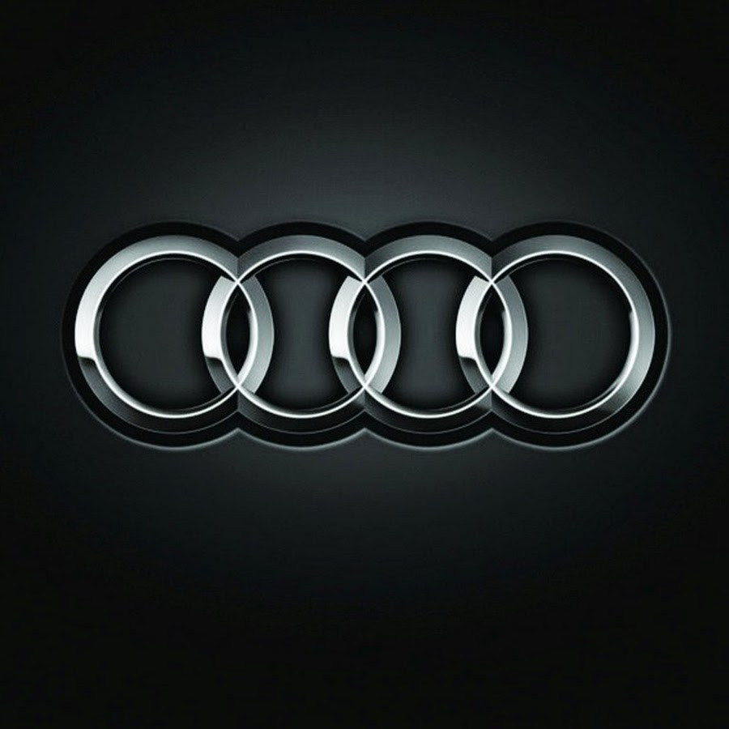

Mercedes-Benz
История марки Mercedes-Benz слагается из историй двух известных немецких автомобильных компаний — Benz и Cie. (основана Карлом Бенцем в 1883 году)

BMW
20 июля в 1917 году две компании "Rapp Motoren-werke" и "Gustav Otto Flugmaschinenfabrik" под руководством Карла Раппа и Густава Ото.

AUDI
Компания «Ауди» была основана в 1909 Августом Хорьхом.Её корни уходят к знаменитой в прошлом фирме Horch,блиставшей во времена третьего Рейха.

Porsche
Porsche AG — немецкий производитель автомобилей и солнцезащитных очков, основанный конструктором Фердинандом Порше в 1931 году.

KIA
Kia Motors Corporation — второй автопроизводитель в Республике Корея и седьой в мире,основана в декабре 1944 года. Входит в группу компаний Hyundai Motor Group.